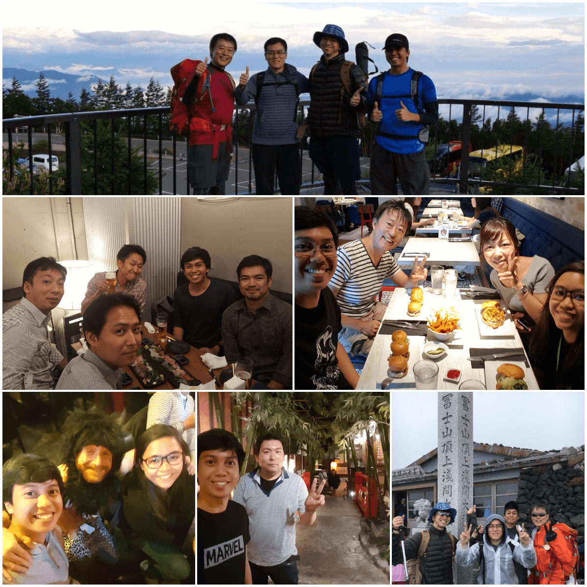
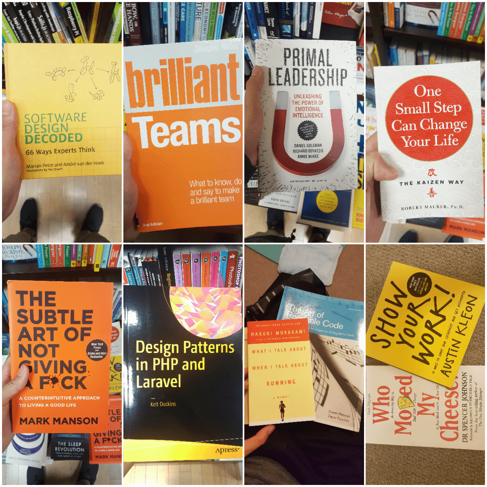
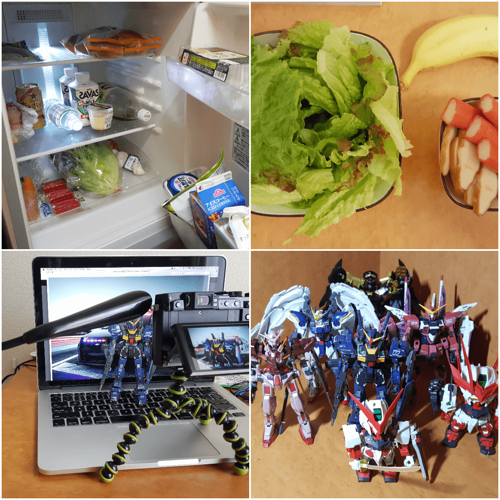
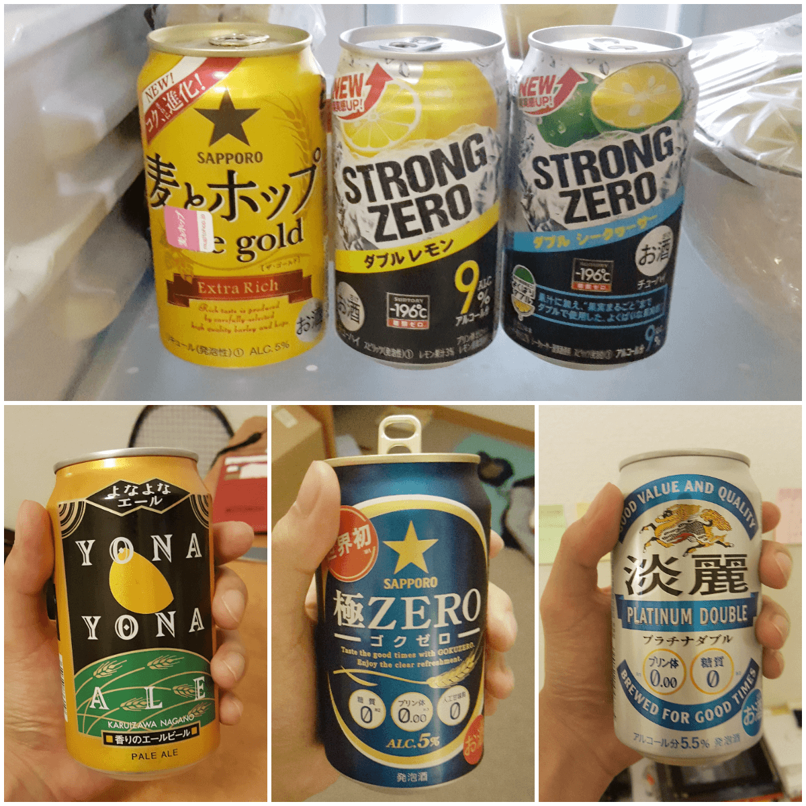

#jeROAMINGaround
What I learned about Japan in 6 months
by Jerome
Disclaimer: This presentation is not work-centered.
Before we start, here are some pictures.




Japan is...
Well-coordinated
Connected
Hassle-free (for most people)
Japanese...
customer service is outstanding
facilities work well
people have lots of choices
people (most) have low to zero English proficiency
As a Filipino in Japan (office / country)
I need to learn a bit of the language
I knew my Japanese counterparts a lot
I didn't have trust issues with the people
I experienced a paradigm shift...